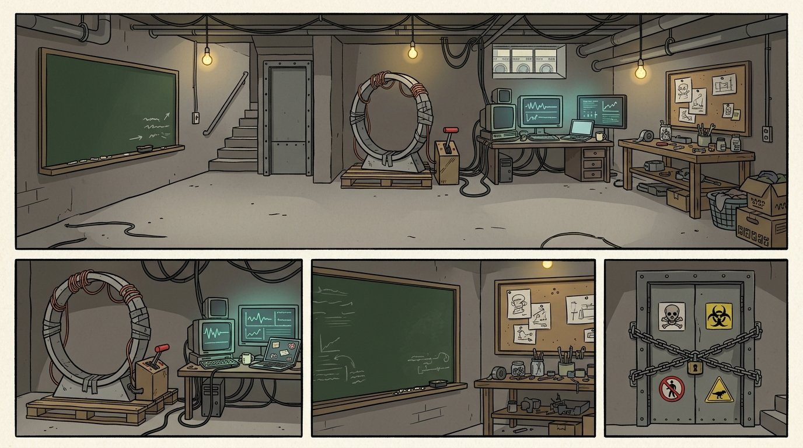

背景測試：第 4 幕
要回答的問題：prompt 補上程式從地圖算的背景以後，Flow 會不會照地圖畫背景？
■ 舊＝第 5 版原本的 prompt（背景是 model 自己寫的，通常只有一句 "Concrete basement lab."）。
■ 新＝同一份 prompt，只刪掉 model 的背景句，補上程式算的背景；其他字、參考圖都不變。地圖已照 REF_LAB 改成地下室。地圖上黃色＝相機看到的範圍。
設定圖 REF_LAB

要回答的問題：prompt 補上程式從地圖算的背景以後，Flow 會不會照地圖畫背景？
■ 舊＝第 5 版原本的 prompt（背景是 model 自己寫的，通常只有一句 "Concrete basement lab."）。
■ 新＝同一份 prompt，只刪掉 model 的背景句，補上程式算的背景；其他字、參考圖都不變。地圖已照 REF_LAB 改成地下室。地圖上黃色＝相機看到的範圍。
